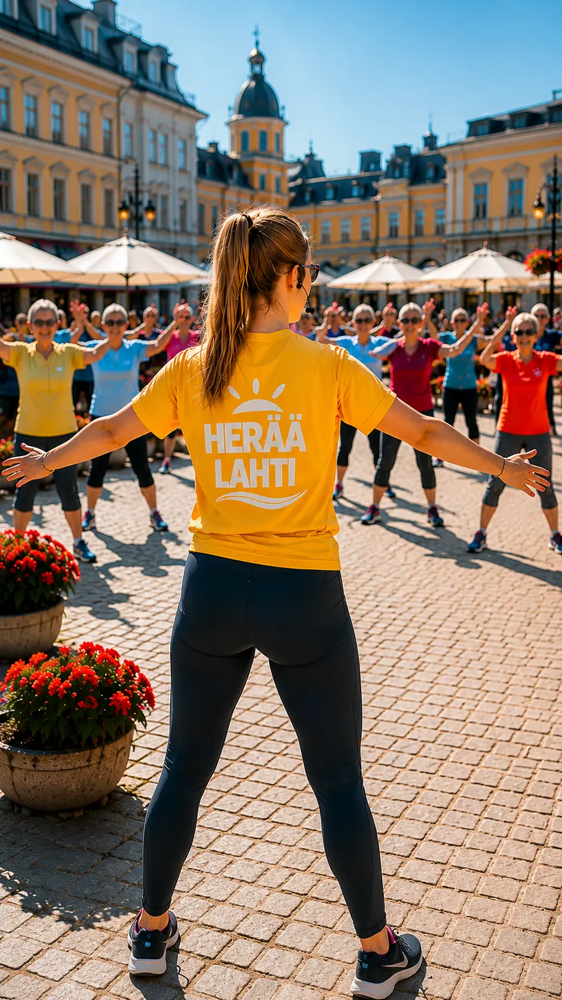
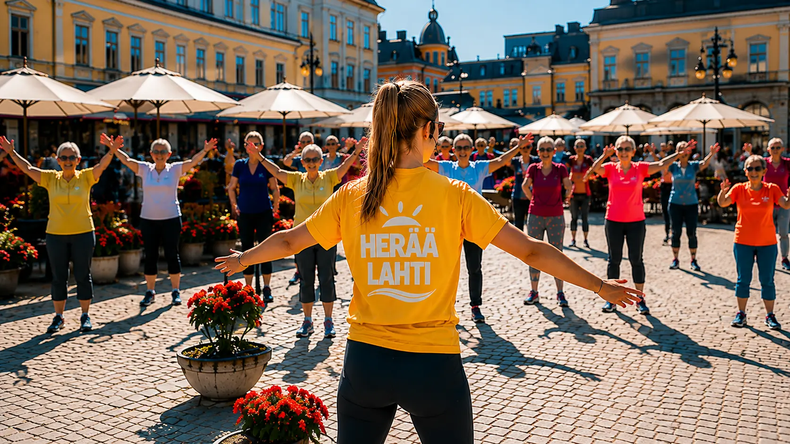

Herää Lahti tuo
uuden kesäilmiön
torin aamuihin
Nuoret ohjaavat, kaupunki liikkuu
Lahteen syntyy ensi kesänä uudenlainen, osallistava hyvinvointi-ilmiö, joka näkyy torin aamuissa, kaupunginosissa ja myös verkossa.
Herää Lahti tuo lyhyitä, 5-15 minuutin liikuntahetkiä sinne, missä ihmiset jo ovat - torille, kahviloiden läheisyyteen, puistoihin ja kaupunginosiin. Tapahtumiin voi osallistua matalalla kynnyksellä ilman ennakkoilmoittautumista.


Nuoret keskiössä
Keskeisessä roolissa ovat alle 18-vuotiaat nuoret, jotka toimivat ohjaajina kesätyösetelin turvin.
Nuoret koulutetaan ohjaamaan kevyitä liikuntahetkiä, kuten asahia ja tai chitä, ja he toimivat tapahtumien kasvoina eri puolilla kaupunkia.
Kyseessä on uudenlainen kesätyö, jossa yhdistyvät esiintyminen, ihmisten kohtaaminen ja hyvinvoinnin edistäminen.
Koko tori mukaan
Lahden torilla tapahtumat toteutetaan useana samanaikaisena pisteenä erityisesti kahviloiden läheisyydessä.
Liike leviää torilla pöydästä toiseen: yksi aloittaa, toinen seuraa - ja pian mukana on osallistujia eri puolilta aluetta. Toiminta lisää viihtyvyyttä ja tuo torille uutta, yhteisöllistä energiaa.
Herää Lahti myös verkossa
Osa tapahtumista välitetään kevyinä live-lähetyksinä sosiaaliseen mediaan. Tavoitteena ei ole rakentaa perinteistä ohjelmaa, vaan tuoda esiin aitoja hetkiä torilta ja kaupunkilaisista.
Kesän aikana julkaistaan myös "Herää Lahti - Torin hetkiä" -videosarja, joka seuraa ilmiön syntyä ja kasvua.
Hyvinvointia ja yhteisöllisyyttä
Herää Lahti -konseptin taustalla toimii Eläkeliiton Lahden yhdistys. Toiminta tukee ikääntyvien toimintakykyä ja tuo samalla eri sukupolvet yhteen arjen keskellä.
Yhteistyö
Hankkeeseen etsitään mukaan paikallisia yrityksiä ja toimijoita tukemaan nuorten työllistymistä ja yhteisöllistä hyvinvointia.